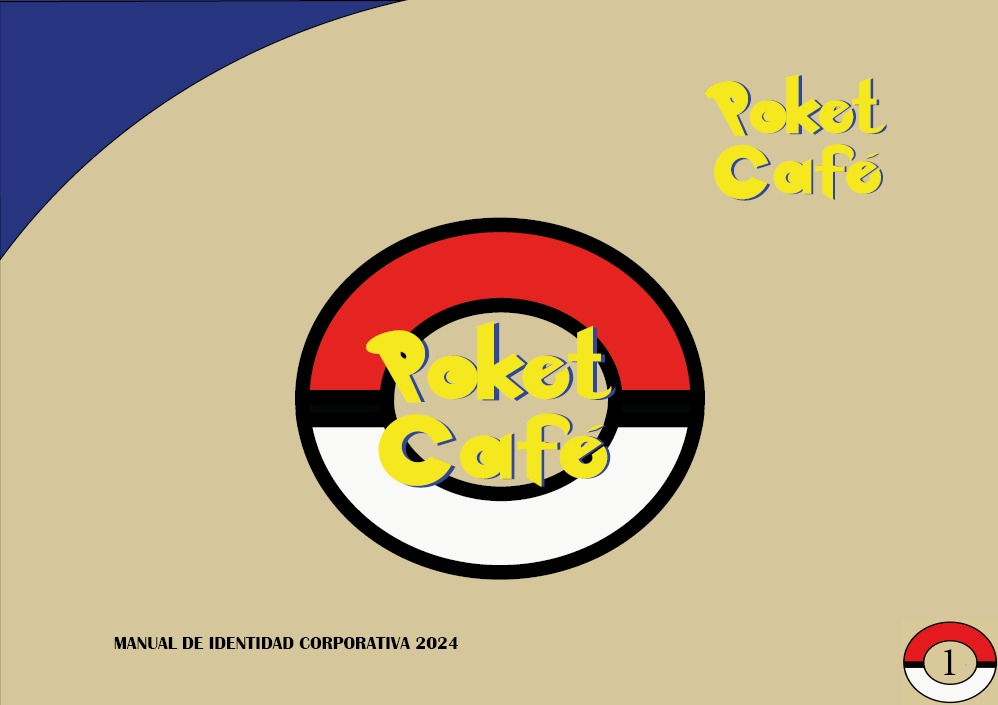
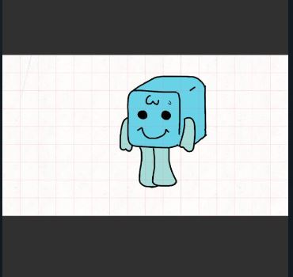
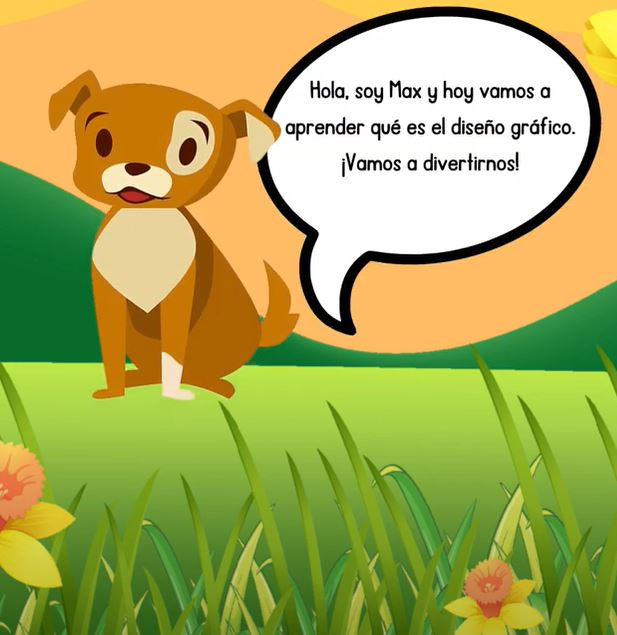

Acerca de
Estudiante aspirante a diseñadora gráfica . Me considero una persona proactiva, organizada, responsable capaz de resolver cualquier problema de manera creativa.
Mi punto fuerte es la emoción y disposición de aprender cosas nuevas y tengo la capacidad de hacer trabajo en equipo muy desarrollada.
Trabajos

Manual corporativo Poket Café
Photoshop - Ilustrador - Habilidades de investigación

Practicas con animación
Habilidad manual
Animaciones
Ilustrador

Video informativo
After Effects